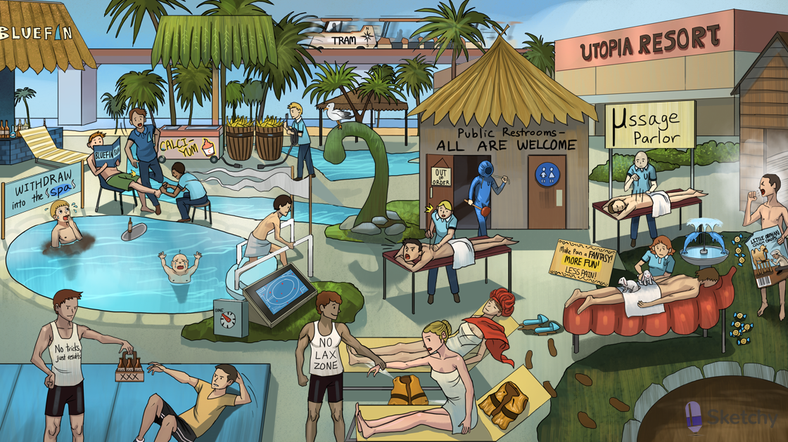

Utopia: opiates
μssage: μ-opioid receptor (mediates most clinical and adverse effects: e.g. analgesia, sedation, constipation, respiratory depression)
Pain-relieving acupuncture: μ-opioid receptor mediates analgesia
Open banana barrels: opiate receptors open K+ channels
Closed Calci-Yum ice cream cooler: opiate receptors close VG Ca2+ channels
Disconnected presynaptic wire: closure of presynaptic VG Ca2+ channels prevents release of neurotransmitters (e.g. glutamate, acetylcholine, norepinephrine, serotonin, substance P)
“Fantasy”: fentanyl (opioid analgesic)
“More fun”: morphine (opioid analgesic)
Distant tram: tramadol (a weak μ-opioid receptor agonist used to manage chronic pain)
North-South: tramadol also inhibits reuptake of norepinephrine and serotonin
Colon μssage table: μ-opioid receptors are located in the GI tract (delay stool transit)
Removed muddy slippers: opioids (e.g. loperamide, diphenoxylate) can be used as antidiarrheals
Lop-eared rabbit: loperamide (opioid antidiarrheal)
Loping back and forth: loperamide increases colonic phasic segmentation (increase stool transit time)
Dolphins: diphenoxylate (opioid antidiarrheal)
Barcode: codeine (opioid antitussive)
Orphan: dextromethorphan (opioid antitussive)
Tethered nomadic camel: dextromethorphan antagonizes NMDA receptors
Cerebral towel: opiates cause CNS depression (e.g. sedation)
Deflated lung vest: opiates can cause respiratory depression
Constricted hood: opiates cause miosis (constricted pupils)
Plunger: opiates can cause constipation
Biliary tree: opiates can cause biliary colic (contract biliary smooth muscle)
"All are welcome”: patients may develop tolerance to opiates
“Out of order”: tolerance does not develop for miosis or constipation
Causing pain: opiate induced hyperalgesia can occur with chronic use
Anxious, hot, and moist: opioid withdrawal (rhinorrhea, lacrimation, yawning, hyperventilation, hyperthermia, muscle aches, vomiting, diarrhea, anxiety)
DONE timer: methadone (long acting opioid used to attenuate withdrawal symptoms)
Long tapering flag: methadone and buprenorphine have a long half lives (used in opioid detoxification)
Blueprint: buprenorphine (long acting partial μ-opioid agonist used to attenuate withdrawal symptoms)
Irritable, moist, tachypneic baby: neonatal abstinence syndrome (diarrhea, sweating, sneezing, crying, tachypnea, irritability)
Partial μssage: partial μ-opioid agonists (e.g. buprenorphine, nalbuphine, butorphanol)
Bluefin: “bu-phin” in names of partial μ-opioid agonists (e.g. buprenorphine, nalbuphine, butorphanol)
Falling into the withdraw spa: partial μ-opioid agonists can induce withdrawals
No lax zone: naloxone (μ-opioid antagonist) used to reverse acute opioid toxicity (can precipitate withdrawals)
No tricks zone: naltrexone (μ-opioid antagonist) helps maintain abstinence in heroin addicts
Tempting alcohol: naltrexone (μ-opioid antagonist) helps reduce cravings for alcohol and nicotine
Getting fit: naltrexone (μ-opioid antagonist) can help with weight loss